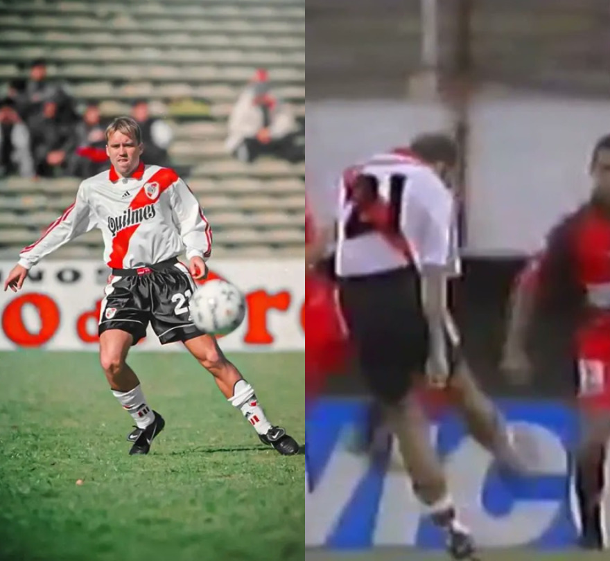

Eduardo "El Chacho" Coudet
Nació en una familia humilde de Buenos Aires. Su madre era ama de casa y su padre dentista (incluso atendía a jugadores de Boca Juniors). Tiene un hermano mayor con discapacidad. Creció como hincha de Boca Juniors, pero su carrera lo llevaría a brillar en el clásico rival. Es conocido por su personalidad extrovertida, carismática, picardía y sentido del humor. Tiene cuatro hijos (tres nenas y un varón) que viven en Buenos Aires, lo que ha complicado su vida familiar durante sus etapas en el exterior. Se lo describe como un hombre de fuerte temperamento pero muy cercano a sus jugadores.

- Campeón con River Plate (Apertura 1999, Clausura 2000, Clausura 2002, entre otros)
- Copa Conmebol 1995 con Rosario Central
Como Director Técnico

- Campeón de la Superliga Argentina 2018-19 con Racing Club
- Trofeo de Campeones 2019 con Racing
- Campeón Mineiro con Atlético Mineiro
- Mejor DT de las semifinales del Apertura 2026 con River Plate
Gol del Chacho a Boca - Boca 0-3 River (2002)
Gol de Eduardo Coudet en la histórica goleada 3-0 en La Bombonera
Logros de los equipos q estuvo como jugador